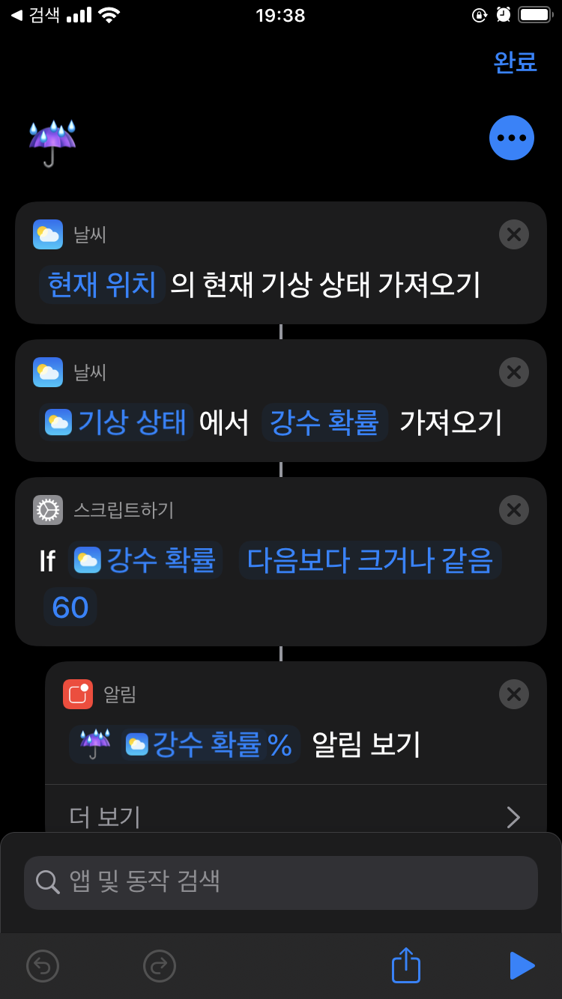
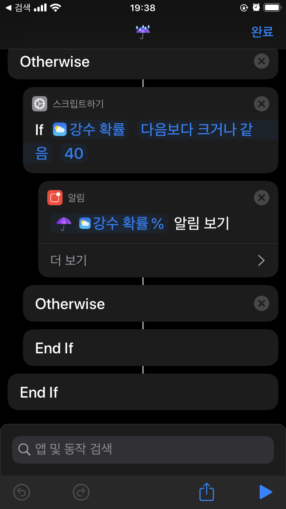
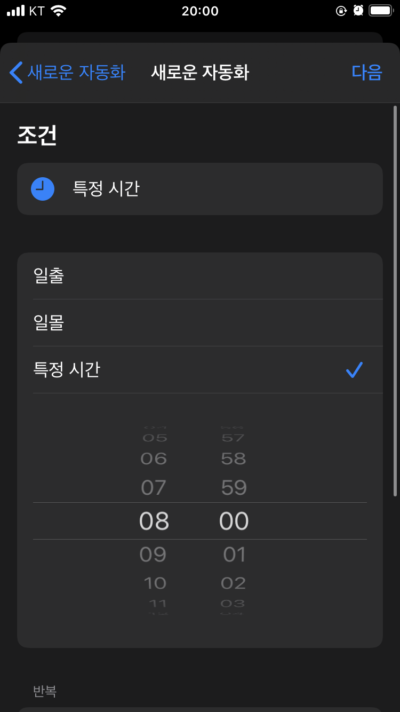
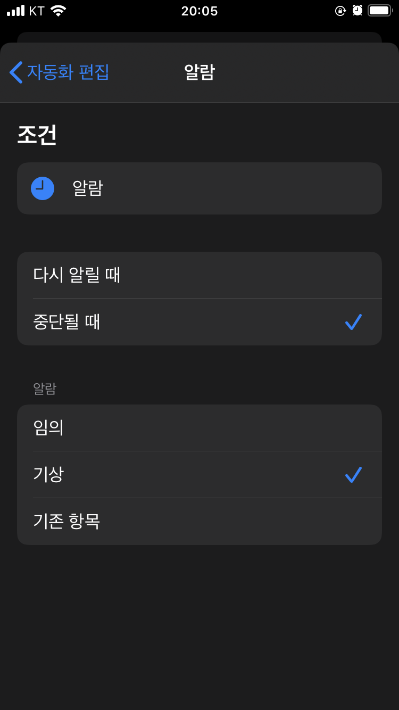
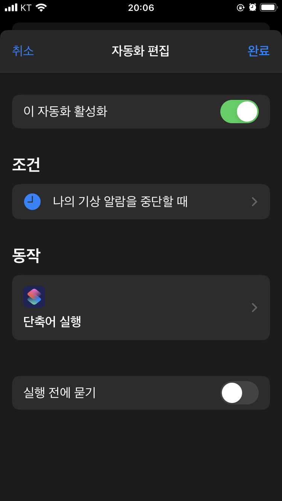

애플 iOS의 단축어(Shourtcuts) 는 클릭 한번으로 여러가지 작업을 할 수 있는 자동화 기능입니다. IFTTT나 Zapier 같은 다른 자동화 툴과 비슷한 기능을 제공하는데요, 여러 웹 서비스와 연동해서 사용할 수 있는 다른 서비스와는 달리 확장성은 좀 떨어집니다. 하지만 애플에서 제공하는 앱인 만큼, 애플 자체의 기능과 궁합이 잘 맞고, 코딩하는 것처럼 워크플로우를 만들 수 있어 코딩 경험이 있으신 분들은 어렵지 않게 원하는 기능을 만들 수 있습니다.
하지만 특정 유저들을 제외하고는 인기는 별로 없습니다. 다양한 기능을 제공하긴 하지만 딱히 어디에 쓸지도 모르겠고, 직접 눌러서 실행해야 해서 엄청 편하다는 느낌이 부족했습니다. 그나마 iOS 12에서 시리(Siri)와 연동해서 접근성을 높이고, iOS 13에서 ‘자동화(Automations)’라는 트리거 기능을 추가하면서 자동 실행을 할 수 있게 되었습니다. 단축어 자체의 기능도 꾸준하게 업데이트 되고, 지원하는 앱도 하나 둘 추가되고 있어 점차 활용도가 높아지고 있습니다.
- 접근성: 시리 연동 추가
- 자동 실행: 자동화 기능 추가
- 활용도: 기능 업데이트 + 지원 앱 추가 + 홈 자동화
오늘 우산을 가져가야 할까?
제가 직접 만들거나 유용하게 사용하고 있는 단축어 및 자동화 기능을 하나씩 소개해드리려고 합니다. 오늘 첫 번째 포스트로 아침에 우산을 챙겨야할지 여부를 알려주는 단축어입니다.

단축어를 만드는 과정은 코딩을 하는 것과 비슷합니다. 먼저 전체적인 로직을 생각해보죠.
- 현재 위치의 기상 상태 가져오기
- 기상 상태에서 강수 확률을 가져오기 (숫자)
- 만약 강수 확률이 60보다 크다면
- 알림 보기
- 그렇지 않다면
- 알림 보기
간단하죠? 여기에 조금 더 꾸미기 기능을 추가해볼까요? 알림에 우산 이모지를 추가하면 좋겠는데 이모지가 두 개(☂️, ☔️)니까 확률에 따라 골라서 사용하고 싶습니다. 이 로직을 추가하면 다음과 같습니다.
- 현재 위치의 기상 상태 가져오기
- 기상 상태에서 강수 확률을 가져오기 (숫자)
- 만약 강수 확률이 60보다 크다면
- 알림 보기 (☔️ 강수확률%)
- 그렇지 않다면
- 만약 강수 확률이 40보다 크다면
- 알림 보기 (☂️ 강수확률%)
- 그렇지 않다면
- 만약 강수 확률이 40보다 크다면
- 그렇지 않다면
‘그렇지 않다면(Otherwise)’ 부분에 다른 내용을 추가하는 것이 더 좋지만, 우산이 있을 때만 알림을 보고 싶으니까 비워놓도록 하겠습니다.
단축어 만들기
이제 이를 그대로 옮기기만 하면 되는데요, 처음엔 좀 낯설지만 자주 쓰는 항목이 어디에 있는지 익숙해지면 쉽게 만들 수 있습니다.
만드는 과정을 생략하고 싶으신 분들은 ShortcutsGallery 링크에서 바로 추가하시면 됩니다.
각 동작은 앞선 동작의 결과를 입력으로 받습니다. 코딩에서 함수 체이닝같죠. 만약 앞쪽 결과가 필요 없으면 ‘동작 없음’ 동작을 추가하면 새롭게 흐름을 만들 수 있습니다.
- 앱 → 날씨 → 현재 위치의 현재 기상 상태 가져오기
- 앱 → 날씨 → 기상 상태에서 강수 확률 가져오기
- If 강수 확률 다음보다 크거나 같음 60
- 스크립트 > 알림 (☔️ 강수확률%)
- 그렇지 않다면
- If 강수 확률 다음보다 크거나 같음 40
- 스크립트 > 알림 (☂️ 강수확률%)
- 그렇지 않다면
- If 강수 확률 다음보다 크거나 같음 40
- 그렇지 않다면
하단의 재생 버튼(▶︎)을 눌러서 실행 결과를 테스트해볼 수 있습니다.


자동화 적용하기
단축어는 만들었지만 아침마다 직접 눌러야 한다면 귀찮죠. 시리에게 물어보는 것도 귀찮습니다. 자동화를 이용해봅시다.
제일 먼저 생각해볼 수 있는 건 매일 아침 특정 시간에 실행되는 겁니다.

하지만 실제로 해보면 자동으로 실행되는 대신에 실행할 거냐고 물어보는 알림이 먼저 옵니다. 물어보지 않고 바로 실행하게 할 수 있는 트리거에 제약이 있기 때문입니다.
다음 자동화는 자동으로 실행할 수 있습니다.
- 에어플레인 모드
- 알람
- CarPlay
- 방해금지 모드
- 저전력 모드
- NFC
- 앱 열기
- Apple Watch 운동
다음 자동화는 자동으로 실행할 수 없습니다.
- 도착할 때
- 내가 떠나기 전에
- Bluetooth
- 떠날 때
- 특정 시간
- Wi-Fi
특정 시간 자동화는 자동 실행을 지원하지 않네요. 자동화라는 이름이 무색할 정도입니다.
대신 알람 기능은 자동 실행을 지원하기 때문에 이를 활용해봅시다. 아침에 일어나서 기상 알람을 끌 때 해당 단축어가 자동으로 실행되도록 하면 좋을 것 같습니다.

다음으로 동작에는 단축어 실행을 추가해 위에서 만든 단축어를 지정합니다.

- 조건: 나의 기상 알림을 중단할 때
- 동작: 단축어 실행 > 위에서 만든 단축어 지정
- 실행 전에 묻기는 꺼줍니다.
이제 완성입니다! 아침에 일어나 기상 알람을 끄면 오늘 강수량을 확인해서 우산을 가져가라고 푸시 알림으로 알려줍니다.
다음 포스트에서는 좀 더 복잡한 단축어를 살펴보겠습니다.